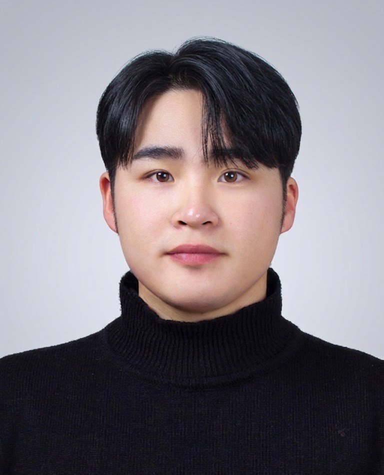

Researching Video Super Resolution, video compression standards including HEVC, VVC, and Beyond VVC, Rate Control algorithms, and 3D Gaussian Splatting at Image Signal Processing Lab, Dong-A University. Advised by Prof. Dongsan Jun.
I am a M.S. student in the Department of Computer Engineering at Dong-A University, Busan, South Korea, advised by Prof. Dongsan Jun in the Image Signal Processing Laboratory (ISPL).
My primary research interest lies in deep learning–based video quality enhancement. I have focused on Video Super Resolution (VSR) using deformable convolution–based alignment and dense feature extraction, targeting both quality-maximizing and edge-device–deployable lightweight architectures.
In parallel, I work on VVC (H.266) video compression, focusing on inter-prediction optimization and rate control algorithms — optimizing QP scheduling and bit allocation under constrained bitrate budgets. This line of work has led to 3 domestic patent filings.
More recently, I have expanded into 3D Gaussian Splatting (3DGS), exploring scene analysis and quality evaluation for real-time novel-view synthesis pipelines. I also contributed production-level software to the Busan Smart City Digital Twin Platform, commissioned by the National Information Society Agency (NIA).
Video Super Resolution (VSR) is a class of methods that reconstruct high-resolution video frames from temporally consecutive low-resolution inputs by exploiting inter-frame spatial-temporal correlations through deep neural networks.
3D Gaussian Splatting (3DGS) is a point-based scene representation that models a scene as a set of anisotropic 3D Gaussians, enabling real-time novel-view synthesis via differentiable rasterization without neural ray marching.
Versatile Video Coding (VVC / H.266) is the latest generation ITU-T/ISO video coding standard that achieves approximately 50% bitrate reduction over HEVC through advanced partitioning, inter/intra prediction tools, and in-loop filtering.
Rate control in video coding determines the quantization parameter (QP) and bit allocation per coding unit to meet a target bitrate constraint while maximizing perceptual quality, balancing distortion against buffer and bandwidth limits.
A smart city digital twin is a real-time virtual replica of urban infrastructure — integrating GIS, IoT sensor streams, and 3D city models — that enables simulation, monitoring, and data-driven decision support for city administrators.
Image quality assessment (IQA) encompasses both full-reference metrics (PSNR, SSIM, VMAF) and no-reference perceptual models that measure fidelity, structural similarity, and human visual system–aligned distortion in restored imagery.
Video Super Resolution using Residual Dense Alignment Network (RDAN). Achieves +0.23 dB PSNR improvement over DCAN on REDS4 benchmark. Published in KCI Journal of Korea Multimedia Society (2023).
Analysis and evaluation toolkit for 3D Gaussian Splatting scenes. Supports scene statistics, quality metrics, and visualization of Gaussian primitives for research in novel-view synthesis.
Front-end for Busan Metropolitan City's 1365 Smart City Digital Twin Platform ("Urban Artificial Lighting Safety Service"), commissioned by NIA. Features real-time 3D heatmap, light-source simulation, and admin dashboards. Live at 1365twin.busan.kr.
LiDAR-based obstacle detection system providing directional audio warnings for visually impaired pedestrians. Won Capstone Design Award at Dong-A University. Research paper presented at IEEE conference.
3D interactive planetarium built in Unreal Engine — explore and learn about 52 constellations in virtual reality. Demonstrates real-time 3D rendering and interactive XR design.